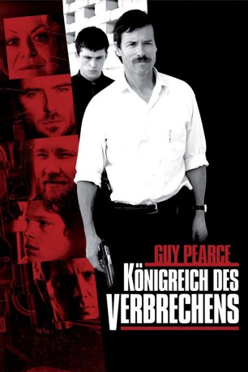
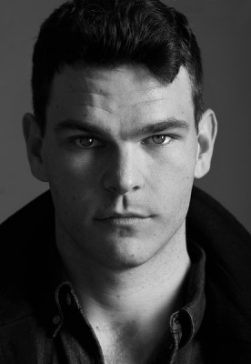
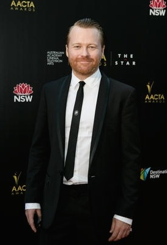

#1755 Königreich des Verbrechens
Auszeichnungen: für 1 Oscars nominiert
 
 IMDB-Wertung: 7.3 / 10
IMDB-Wertung: 7.3 / 10  Metascore: 83
Metascore: 83 
Selbst auch nicht gerade eine Heilige, hat es Julia Cody über Jahre erfolgreich geschafft, ihren 17-jährigen Sohn Joshua vor ihrer kriminellen Familie abzuschirmen. Als sie jedoch an einer Überdosis Heroin stirbt, wendet sich Joshua an seine Großmutter, Janine "Smurf" Cody. Diese wacht mit einer grenzwertig inzestuösen Liebe über ihre drei Söhne, die ihren Lebensunterhalt mit brutalen Banküberfällen bestreiten. Die Polizei ist insbesondere ihrem ältesten Sohn Pope auf den Fersen, der es immer wieder schafft, rechtzeitig unterzutauchen. Doch als die Polizei von Joshua erfährt, versucht sie, ihn als Spitzel einzuspannen. Für den Jungen beginnt eine lebensgefährliche Gratwanderung
...
Jahr: 2010
Dauer: 113 Minuten
FSK: 16
Land: Australien Studio: Koch MediaTonspuren: DTS - ,
Untertitel: Deutsch,
Auflösung: 1080p (1920x816) Größe: 6400 MB
Genre: Krimi, Drama, Thriller
Regisseur: David Michôd
Drehbuch: David Michôd
Soundtrack: Antony Partos
Darsteller:
 James Frecheville als Joshua 'J' Cody
James Frecheville als Joshua 'J' Cody Jacki Weaver als Janine 'Smurf' Cody
Jacki Weaver als Janine 'Smurf' Cody Joel Edgerton als Barry 'Baz' Brown
Joel Edgerton als Barry 'Baz' Brown- Luke Ford als Darren Cody
 Sullivan Stapleton als Craig Cody
Sullivan Stapleton als Craig Cody- Mirrah Foulkes als Catherine Brown
- Justin Rosniak als Detective Randall Roache
- Michael Vice als Hood #1
- Laura Wheelwright als Nicky Henry
 Ben Mendelsohn als Andrew 'Pope' Cody
Ben Mendelsohn als Andrew 'Pope' Cody- Susan Prior als Alicia Henry
- Clayton Jacobson als Gus Emery
- Tim Phillipps als Const. Daniel Hordern
-  Josh Helman als Const. Peter Simmons
- Kieran Darcy-Smith als John Harrop
 Guy Pearce als Detective Senior Sgt Nathan Leckie
Guy Pearce als Detective Senior Sgt Nathan Leckie-  Anthony Hayes als Detective Justin Norris
 Dan Wyllie als Ezra White
Dan Wyllie als Ezra White Andy McPhee als Richard Collis
Andy McPhee als Richard Collis- Anna Lise Phillips als Barrister Justine Hopper
- David Michôd als Reporter
- Luke Doolan als Drug Squad Officer , uncredited
- George Iskander als Shopper , uncredited
- Paul Rochford als Sog #2 , uncredited
- Mat Stevenson als PSG Doors , uncredited
- Bryce Lindemann als Paramedic #1
- Paul Smits als Paramedic #2
- Anthony Ahern als Armed Robbery Detective
- Chris Weir als Hood #2
- Sarah Nguyen als Waitress
- Lucia Cai als Cashier
- Ann Michôd als Shopper
- Michael Cody als Police Radio
- Jack Heanly als Andy Emery
- Christina Azucena als Dacinta Collis
- Jacqueline Brennan als Sarah Leckie
- Ben Ouwehand als Scott Leckie
- Bert Labonte als PSG Santo
- James Saunders als PSG Gary
- Dom Phelan als PSG Tom
- Brenda Palmer als Smurf's Neighbour
- Tom Noble als Court Warden
- Daniel Roche als SOG
- Andrew Day als Service Station Police Officer , uncredited
- Cameron Ewart als Extra , uncredited
- Stephen Hannah als Detective Extra , uncredited
Datei: X:\2010(G-M)\Königreich des Verbrechens (2010, FSK16, 1920x816).mkv seit 16.08.2015
Festplatte: HD 2010(G-Z)-2011(A-F)
 Es gibt insgesamt 85 Filme in der Gruppe '2010(G-M)'
Es gibt insgesamt 85 Filme in der Gruppe '2010(G-M)'